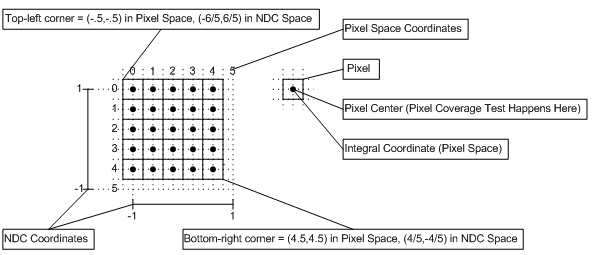

数据采集
Camera Jitter
- 投影矩阵进行子像素级别扰动
Sequence
Warning
motion vector一定要用浮点数保存，因为当前像素在投影回历史帧，位置一般不会正好是pixel center
Warning
motion vector按w h顺序排列，而pytorch、tensorflow api多用hw顺序
计算方式如下
- 图像左上角取值(0, 0)右下角取(1, 1)（注意边缘情况）
- 归一化后，当前像素当前深度，投影回前一帧
- 二者相减得到motion_vector

/* Args pixelCrd: pixel coordinate prevPosH: renderTargetDim: 1920x1080 */ float2 calcMotionVector(float2 pixelCrd, float4 prevPosH, float2 renderTargetDim) { float2 prevCrd = prevPosH.xy / prevPosH.w; #ifdef FALCOR_VK prevCrd *= float2(0.5, 0.5); #else prevCrd *= float2(0.5, -0.5); #endif prevCrd += 0.5f; float2 normalizedCrd = pixelCrd / renderTargetDim; return prevCrd - normalizedCrd; }
float4 prevPosW = mul(prevPos, gPrevWorldMat[vIn.instanceID]); vOut.prevPosH = mul(prevPosW, gCamera.prevViewProjMat);
Info
利用Python unittest包进行单元测试
数据格式
- H W C
- 不同类型数量一致
数据范围
import os import pfm # Falcor图形保存为4 channel float32 .pfm格式，代码来源https://gist.github.com/chpatrick/8935738 class DatasetInspection: """Summary of class here. Longer class information.... Longer class information.... Attributes: likes_spam: A boolean indicating if we like SPAM or not. eggs: An integer count of the eggs we have laid. """ DATASET_PATH = os.getcwd() COLOR_PATH = '' TARGET_PATH = '' MOTION_PATH = '' def simple_check(dataset): """Do simple check for dataset range """ def display(): """Display a list of images, show in Jupyter Notebook Arg: images: tuple, each element is a numpy array, H, W, C order """ pass def get_random_data_group(dataset): """Randomly select a group of data Args: dataset: Returns: color, target, motion Raises: IOError: An error occurred accessing the bigtable.Table object. """ return color, target, motion def check_data_range(data, val_min, val_max): """Check the data range in the image DO NOTE this function only inspect the image's data, DO NOT represent the actual domain of the image Args: image: numpy array """ pass
import unittest from dataset_inspection import DatasetInspection #TODO(lijiankuan) class DatasetTest(unittest.TestCase): def test_data_range(self): pass def test_image_changed(self): pass if __name__ == '__main__': unittest.main()
组内数据一致性
- 采集时保存camera数据
人工检视
- 图片rgb检视
- 上下帧motion vector转换后图片